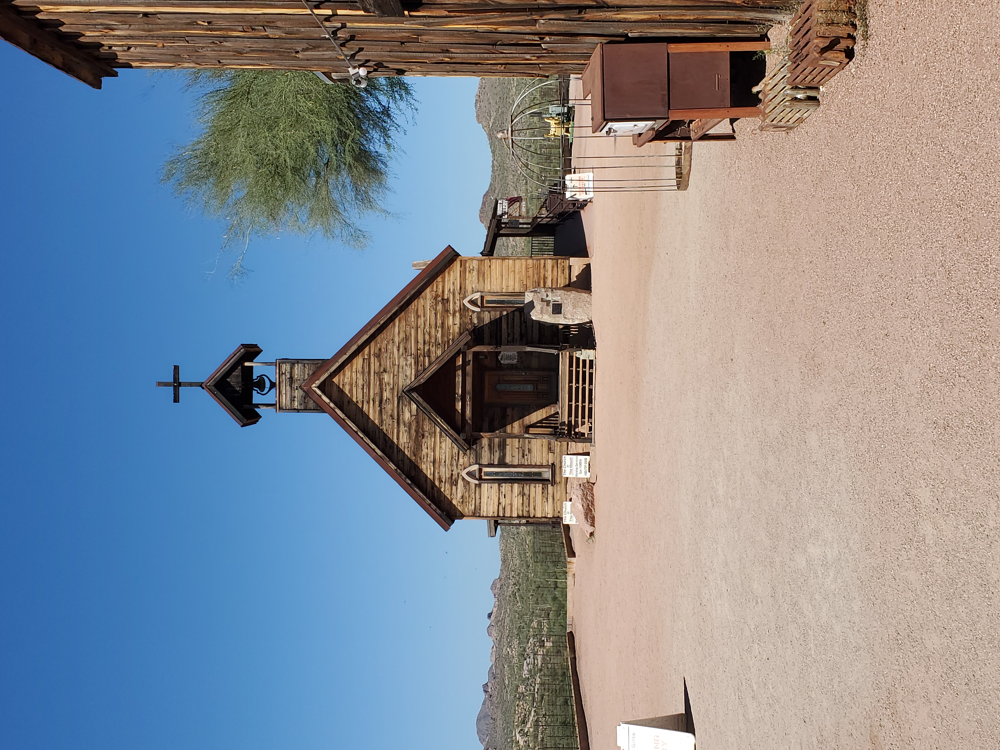

Welcome to my site!
 This site represents the first step in my new professional life. Leaving behind whats old and familiar for the new and ,if I'm being totally honest, scary.
While it wasnt the easiest decision to leave my comfort zone and step into this entierly new world, I know deep down that it was absolutely the right one.
This site represents the first step in my new professional life. Leaving behind whats old and familiar for the new and ,if I'm being totally honest, scary.
While it wasnt the easiest decision to leave my comfort zone and step into this entierly new world, I know deep down that it was absolutely the right one.
 My intention in building this page is to demonstrate my knowledge of web design. For the moment it is admittedly basic but as I add to my professional tool box this site can grow along with me.
 It is my sincere hope that from these very humble beginings I'll be able to apply what I've learned and turn this into a truly professional looking page.
I may be coming into this field later than some but maybe a bit of world experince will work in my favor.
It is my sincere hope that from these very humble beginings I'll be able to apply what I've learned and turn this into a truly professional looking page.
I may be coming into this field later than some but maybe a bit of world experince will work in my favor.
All you have to decide is what to do with the time that is given to you.
-Gandalf